CS530 Introduction to Scientific Visualization Report for Project One
_______________________________________________________________________________________________________________________________________
Task one HeightMap
Objective: Use bathymetry data and color coding to visualize a colored height map of earth with slider UI control of the scalar value
Use of dataset: bathymetry_2161x1080_cyclic.vtk (medium size, the best one my
machine can handle)
Pipeline for rendering
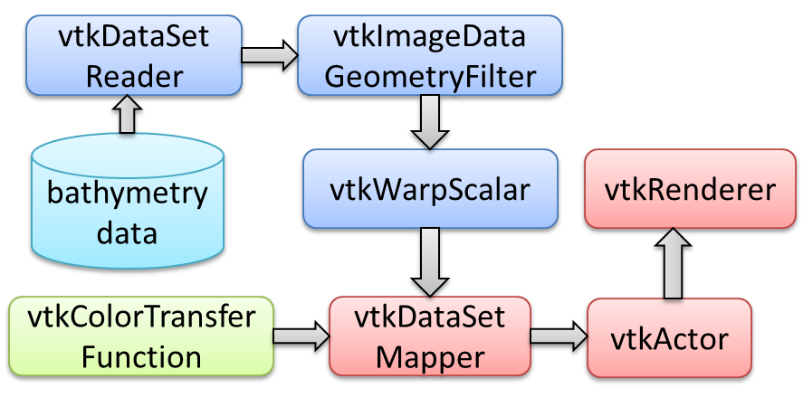
Approach:
Step 1. Use vtkDataSetReader to read in bathymetry data.
Step 2. Use vtkImageDataGeometryFilter to extract geometry from bathymetry data.
Step 3. Use vtkWarpScalar to deform geometry according to the depth information in bathymetry data. The scalar factor is calculated by (Slider UI value * Width of bathymetry data / Earth circumference).
Step 4. Use vtkColorTransferFunction to represent scalar values through colors by passing the vtkColorTransferFunction variable to vtkDataSetMapper through SetLookupTable function.
Step 5. Set the connections between vtkDataSetMapper, vtkActor, vtkRenderer, vtkRenderWindow and vtkRenderWindowInteractor to stand by for interactive visualization.
Step 6. Use vtkSliderRepresentation2D to generate slider UI.
Step 7. Derive a class vtkSliderCallback from class vtkCommand to respond to the slider value change event. vtkSliderCallback keeps a copy of the former vtkWarpScalar pointer and use it to reset the scalar value.
Step 8. Use vtkSliderWidget to connect vtkSliderRepresentation2D, vtkSliderCallback and vtkRenderWindowInteractor to make slider UI working.
Step 9. Render and show.
The visualization result is shown below.
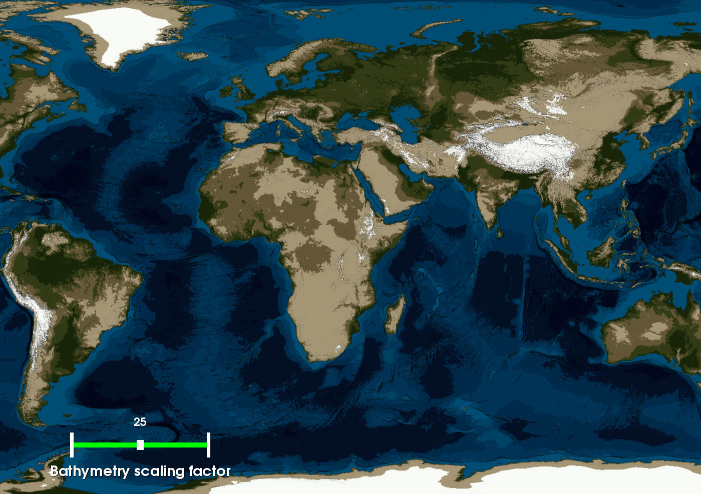
Since the color scale is coarse, the result is only loosely realistic.
The following two pictures show the different heights of relief under different scalar values.

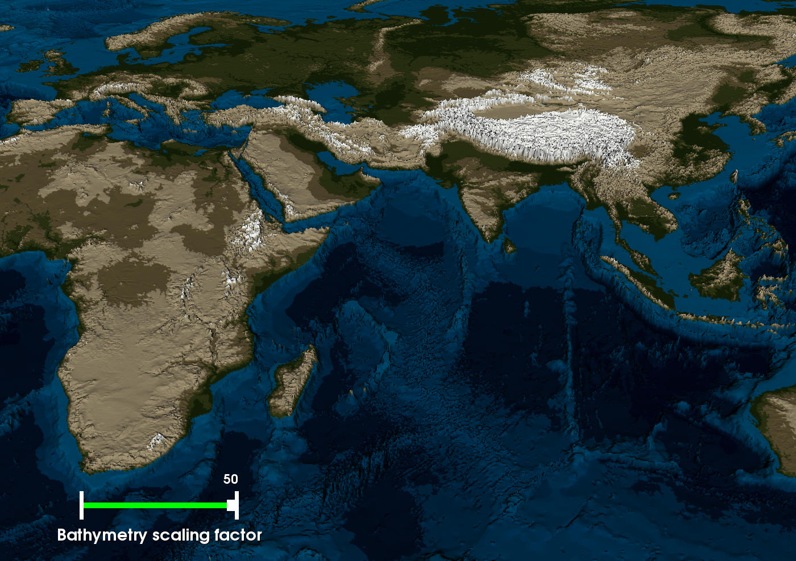
Problems encountered:
1. How to use vtkColorTransferFunction?
Initially when I studied the examples regarding vtkColorTransferFunction I found
that it is mostly used together with vtkVolumeProperty. I asked on piazza
whether these two need to be used together and was told by professor that I just
need to pass the vtkColorTransferFunction to the mapper via SetLookupTable. And
problem solved.
2. Slider bar not showing
I have my own laptop (ATI graphic card) and can also use one laptop (NIVDIA graphic card) in the
lab. The latter one has better hardware. Initially I did my project on my own
laptop. After I got everything working I tried it on the lab laptop and found
that the slider bar was missing. At first I thought it's because of the
different graphic cards. Now I know it has something to do with the setting of
graphic card. I have to use the high performance setting to have it shown.
_______________________________________________________________________________________________________________________________________
Task Two EarthMap
Objective: Use bathymetry data, sphere data and texture image to visualize the
depth information on a textured sphere (earth) with slider UI control of the scalar value
Use of datasets and texture image: bathymetry_2161x1080_cyclic.vtk,
sphere_2161x1080.vtk, and world.topo.bathy.200408.3x5400x2700.jpg (All medium size, the best ones my
machine can handle)
Pipeline for rendering
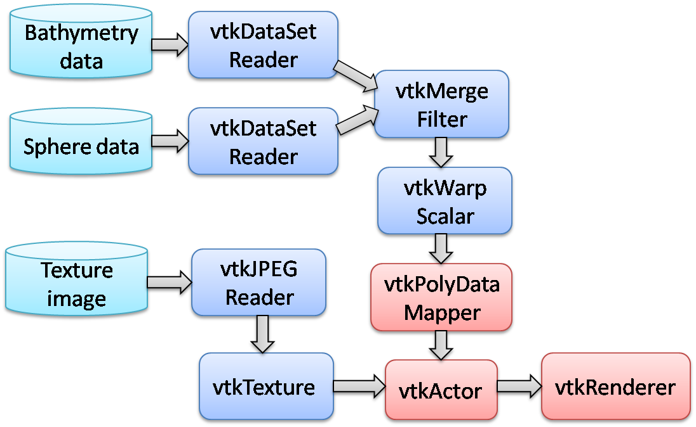
Approach:
Step 1. Use vtkDataSetReader to read in bathymetry data and sphere data; use vtkJPEGReader to read in texture image.
Step 2. Use vtkTexture to extract texture from texture image.
Step 3. Use vtkMergeFilter to merge geometry information, normal information, texture coordinates (these three come from sphere data) and scalar information (from bathymetry data).
Step 4. Use vtkWarpScalar to deform geometry according to the depth information in bathymetry data (now in vtkMergeFilter).
Step 5. Set the connections between vtkPolyDataMapper, vtkActor, vtkRenderer, vtkRenderWindow and vtkRenderWindowInteractor to stand by for interactive visualization.
Step 6. Use vtkSliderRepresentation2D to generate slider UI.
Step 7. Derive a class vtkSliderCallback from class vtkCommand to respond to the slider value change event. vtkSliderCallback keeps a copy of the former vtkWarpScalar pointer and use it to reset the scalar value
(0~50).
Step 8. Use vtkSliderWidget to connect vtkSliderRepresentation2D, vtkSliderCallback and vtkRenderWindowInteractor to make slider UI working.
Step 9. Render and show.
The visualization result is shown below.
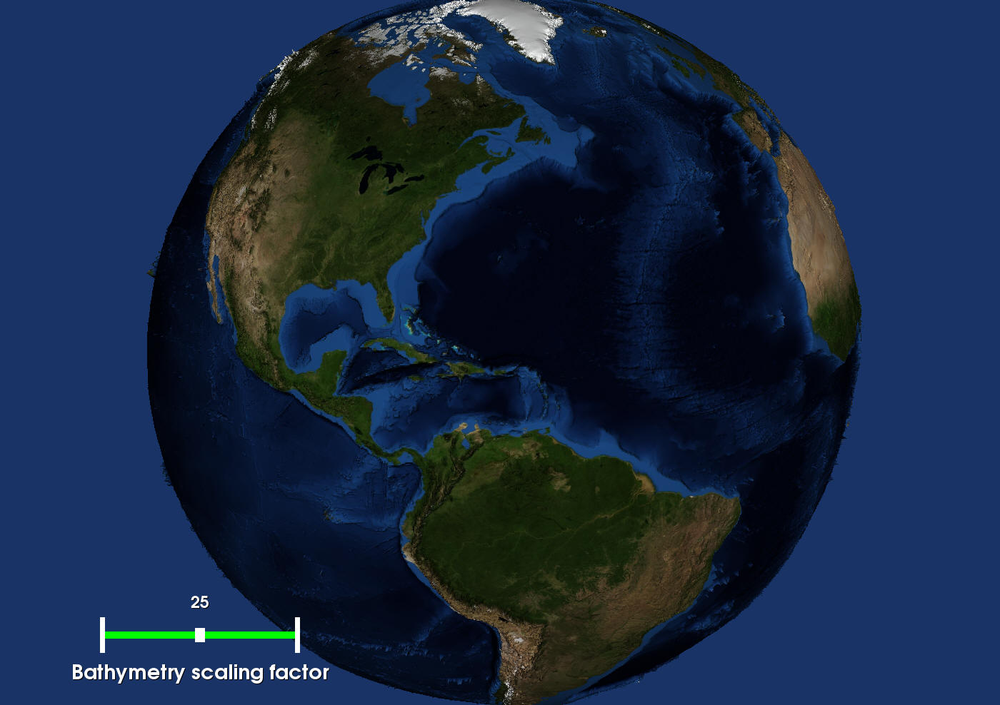
The following two pictures show the different heights of relief under different scalar values.
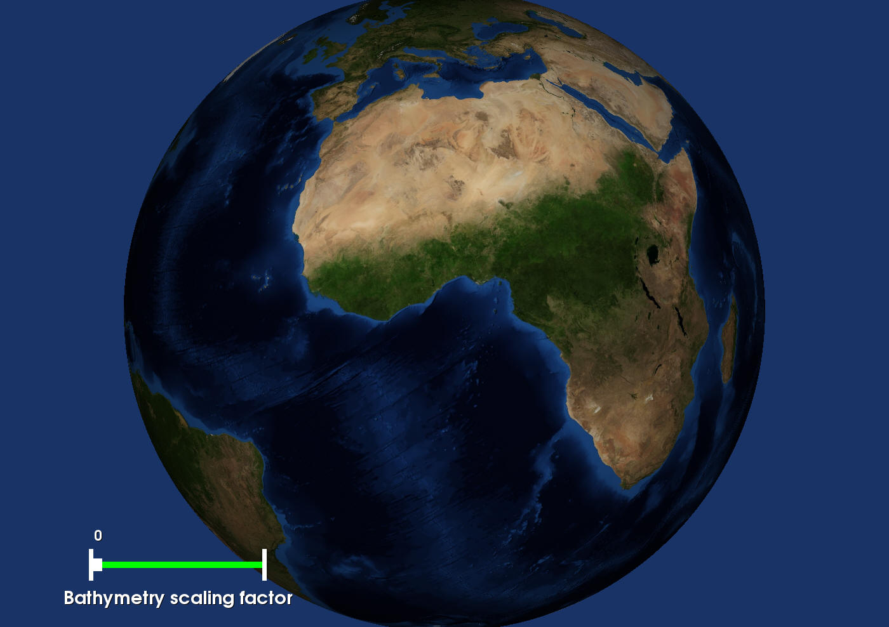
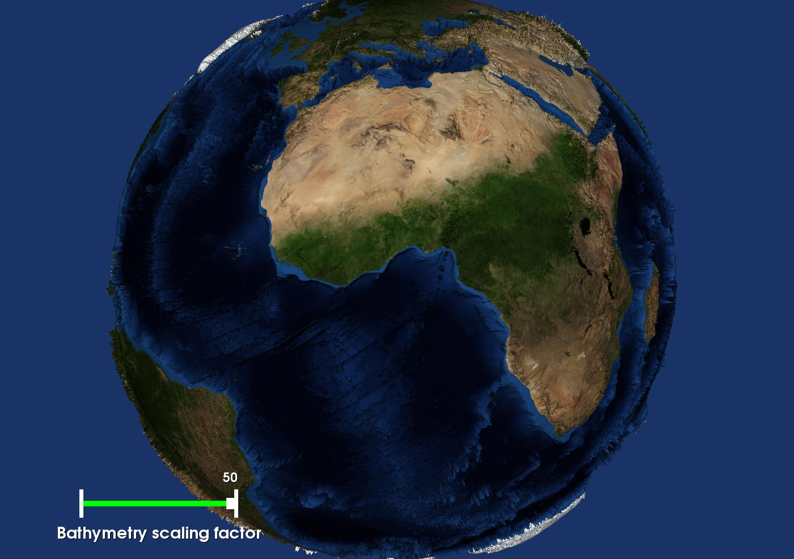
Problems encountered:
1.
No relief on the Sphere.
It turns out that my initial pipeline was wrong. I used to feed vtkWarpScalar to vtkMergeFilter. In fact the order should be reversed.
2. Bathymetry image (red and blue) overlays on the texture.
I asked this on piazza and got the answer from professor --
"mapper->ScalarVisibilityOff()" then everything works fine.
3. Texture can only show properly when the small size texture image is used.
It is the same issue with problem 2
in Task One. The performance setting of graphic card should be set to "high performance."
__________________________________________________________________________________________________________________________________
Task Three SeaRise
Objective: Use bathymetry data, sphere data and texture image to visualize the
newly flooded region on earth with slider UI control of the rise of sea level
Use of datasets and texture image: bathymetry_2161x1080_cyclic.vtk,
sphere_2161x1080.vtk, and world.topo.bathy.200408.3x5400x2700.jpg (All medium size, the best ones my
machine can handle)
Pipeline for rendering
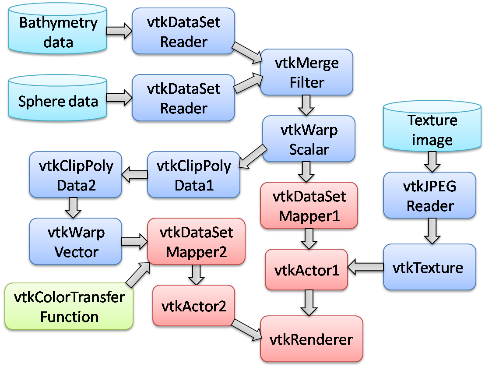
Approach:
Step 1. Use vtkDataSetReader to read in bathymetry data and sphere data; use vtkJPEGReader to read in texture image.
Step 2. Use vtkTexture to extract texture from texture image.
Step 3. Use vtkMergeFilter to merge geometry information, normal information, texture coordinates, translation vectors (these four come from sphere data) and scalar information (from bathymetry data).
Step 4. Use vtkWarpScalar to deform geometry according to the depth information in bathymetry data (now in vtkMergeFilter).
Step 5. Use vtkClipPolyData twice (vtkClipPolyData1, vtkClipPolyData2) to clip the warped terrain. The result is the newly flooded region whose altitude is in the range of [-e, h]. Here h is the rise of sea level; e is a small positive number to avoid visualization artifacts.
Step 6. Use vtkWarpVector to slightly lift the newly flooded region above the warped surface of earth.
Step 7. Use vtkColorTransferFunction to color map the newly flooded region, using given color scale that can be seamlessly merged with the underlying texture.
Step 8. Set the connections between vtkDataSetMapper, vtkActor, vtkRenderer, vtkRenderWindow and vtkRenderWindowInteractor to stand by for interactive visualization. Note that there are two mappers and two actors which correspond to texture mapping part and color mapping part respectively.
Step 9. Use vtkSliderRepresentation2D to generate slider UI.
Step 10. Derive a class vtkSliderCallback from class vtkCommand to respond to the slider value change event. vtkSliderCallback keeps a copy of the former vtkClipPolyData2 pointer and the pointer of its vtkPolyData object to reset the rise of sea level.
Step 11. Use vtkSliderWidget to connect vtkSliderRepresentation2D, vtkSliderCallback and vtkRenderWindowInteractor to make slider UI working.
Step 12. Render and show.
The visualization result is shown below.
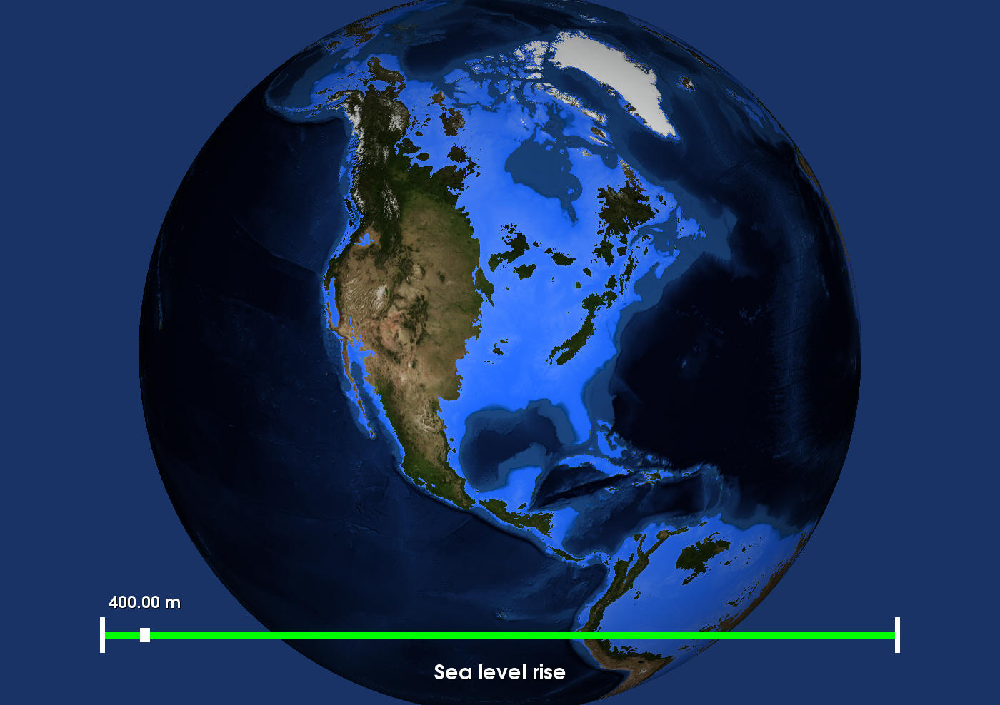
The following two pictures show the flooded region under different sea levels.
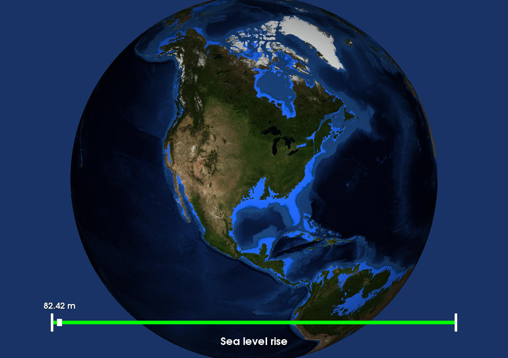
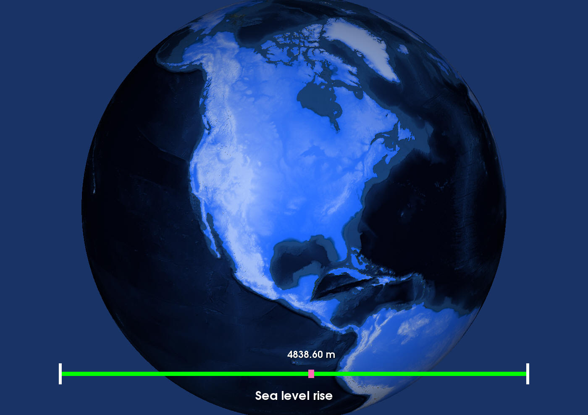
Problems encountered:
1. The scalar value of vtkWarpVector has effect on the area of flooded region, which should not happen.
It happened because I clipped the flat terrain. Should clip the warped one.
2.
No color shows for flooded region.
I forgot to call SetVectorsConnection function for the merger.
{kind=link}
{kind=link}
{kind=link}
{kind=link}
{kind=link}
{kind=link}
{kind=link}
{kind=link}
{kind=link}
{kind=link}
{kind=link}